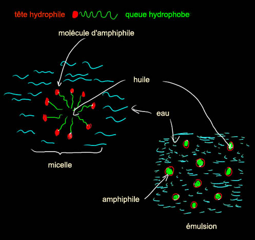
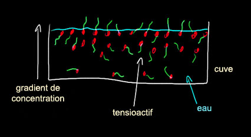
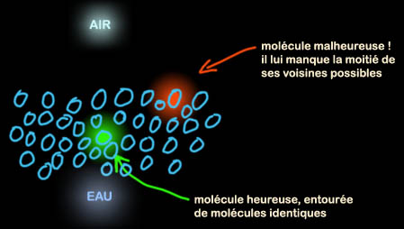
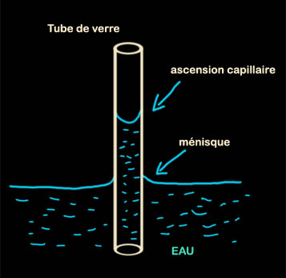

|
|
Navig.
page/section


_____
|
|
Pages soeurs
I, A propos des liants
II, Bulles, siccativ., struct. élec.
III, Caséine, phosphore, dissociation
IV, Les orbitales
V, L'aérogel
VI, Polarisation de la lumière
VII, Sfumato et diffusion Rayleigh
VIII, Les interférentielles
IX, Dextrine, farine et chiralité
X, L'ocre bleue
XI, Les métamatériaux
XII, Le jaunissement
XIII, Laser etc.
XIV, L'holographie
XV, L'holographie numérique
XVI, Extérieur, intérieur, chaux
XVII, L'électrolyse et les ions
XVIII, L'électricité, un peu plus loin
XIX, Oxydation, métaux
XX, Les échelles
XXI, Nature et évolution des résines
XXII, Le mouillage pigmentaire
XXIII, La molette
XXIV, Blanche neige
XXV, Lumière et matière
XXVI, Magnétisme
XXVII, Ambre et vieilles branches
XXVIII, L'origami miroir
XXIX, Le feu
XXX, Peau du métal
XXXI, La ville en un souffle
XXXII, Oxyder des matériaux
XXXIII, Ocre bleue, une solution
_____
|
Copyright © www.dotapea.com
Tous droits réservés.
Précisions cliquer ici
|
|
| |
|
|
Les
dialogues sur la physique-chimie
appliquée
aux arts
Chapitre I
A propos des liants
|
 |
dial dial
dial
English
text

Commençons les
Dialogues de Dotapea par
une discussion entre Jean-Louis, physico-chimiste au CNRS, Anne, une savonnière et cuisinière professionnelle -
voir son site - et un
candide, Emmanuel.
Les personnages sont réels, la
discussion aussi. Elle peut reprendre à tout moment et ce texte peut s'allonger.
|
Emmanuel :
(à Jean-Louis) Je vais te poser une
question qui m'est venue en faisant une mayonnaise. Je te préviens : je
l'ai posée aussi à une cuisinière chevronnée pour avoir un autre point de
vue.
Les cuisiniers évoquent des liants qui effectivement se retrouvent en peinture
(oeuf, farine, gélatine, etc.) et rien n'empêche de
peindre à la mayonnaise
ou de faire une sauce poulette a tempera.
Pourtant, parfois le liant des cuisiniers ne lie pas grand-chose de précis.
Il ne semble pas enrober mais plutôt s'intercaler à la manière d'une simple
charge colloïdale (je me demanderait ce que donnerait une blanquette à la silice
colloïdale), alors qu'en peinture il enrobe le pigment, le maintient en
place. Par contre, dans les deux disciplines, le liant semble avoir des
propriétés plastiques.
Je finis par me demander ce qui définit vraiment ce terme de liant. Ses
propriétés plastiques, ses propriétés collantes et colloïdales, à quelle réalité physique cela correspond-t-il, finalement ? A moins
qu'il ne s'agisse que d'un terme grossier, d'un fourre-tout. Et pourtant, ce
sont sensiblement les mêmes produits que l'on trouve dans ces disciplines.
Qu'en dit un spécialiste des interfaces ?
Et une cuisinière chevronnée ? Qu'est-ce qu'un liant culinaire ?
Anne : Hum, le liant
permet de lier vois-tu ? De lier deux ou plusieurs éléments qui sans son aide
refuseraient de se mélanger. Le liant peut être un
tensioactif, un émulsifiant
(le jaune d'oeuf par exemple). Mais le liant peut aussi être ce qui donne
du corps à une préparation. Un épaississant comme de la farine, de la fleur
de maïs.
Voilà ce qui me vient à l'esprit.
Jean-Louis : Comme
toujours, rien n'est simple. Le seul terme de liant ne rend pas compte de
tout ce qui se passe "derrière". En résumant on peut dire qu' il y a deux
familles de problèmes : 1) rendre miscibles deux produits qui ne le sont pas
(ex. eau et huile) ou stabiliser des suspensions (ex.
l'encre de Chine) ; 2)
coller (lier, agglutiner, enrober, ....) des grains solides sur un support
(peinture).
|
|
|
|
Premier problème :
L'exemple célébrissime de la vinaigrette, si on mélange
de l'huile et du vinaigre, les deux constituants se séparent dès qu'on cesse
de remuer. Magie : si on rajoute de la moutarde, c'est déjà plus stable.
Avec du jaune d'oeuf ça donne même de la mayonnaise. Autre exemple célèbre :
si on disperse de la suie dans de l'eau on obtient une encre magnifique,
mais très rapidement les grains de suie s'agglutinent, tombent au fond de
l'encrier et c'est fichu.
|
|
I.
Miscibilité :
Amour, haine et amphiphiles |
|
Magie : si on ajoute de la
gomme arabique, ça
reste stable (encre de Chine - voir aussi
noir de fumée et noir de suie). Pourquoi ?
Empédocle
(450 BC) puis Aristote estimaient qu'il suffisait de deux forces pour
rendre compte de tous les phénomènes naturels : l'Amour et la Haine. L'Amour
provoquait le rapprochement des objets (ex. la pierre d'aimant), la Haine
provoquait leur éloignement. Cette théorie a connu du succès pendant
quelques siècles.
Et encore aujourd'hui, avouons-le, elle pourrait rester
tentante, les interactions moléculaires se résumant souvent à des
interactions attractives ou répulsives, et il existe des molécules mi-partites,
faites d'amour et de haine, les savons ou
amphiphiles (du grec : qui aime
les deux).
Un amphiphile est un composé moléculaire dont une partie de la
structure est polaire (ou hydrophile, qui aime l'eau et les liquides
dits polaires) et une autre aime les corps gras - qui sont
apolaires -, dite lipophile ou hydrophobe. Les graines de moutarde, le
jaune
d'oeuf, contiennent de telles molécules amphiphiles. Lors du mélange, les
amphiphiles se mettent à l'interface entre l'eau et l'huile, ce qui
stabilise la sauce, on a alors une émulsion. En
général on émulsifie l'huile dans l'eau, on a donc la structure suivante :

L'amphiphile (en agro-alimentaire on dit souvent
émulsifiant) du jaune d'oeuf est la lécithine. On en trouve aussi dans le
soja, c'est un produit essentiel de nombreuses préparations (lire les
étiquettes !), par exemple des sauces, mayonnaises et autres chocolats.
Les
savons sont des amphiphiles, leur partie grasse solubilise la saleté (qui
est souvent grasse) et la formation de micelles permet la dispersion dans
l'eau.
De par leur nature, les amphiphiles sont des molécules
qui préfèrent les interfaces. Contrairement à ce qu'on pourrait croire, un
savon est peu soluble dans l'eau, et ses molécules se placent plutôt à la
surface. Les savons sont des tensioactifs
[lien], ils modifient la tension
superficielle des liquides où ils sont dispersés. C'est pour cette raison
que l'on peut ensuite faire des bulles....

Pour ce qui est de l'encre de Chine, le problème qui
est à l'origine de la floculation est que les particules d'encre sont
chargées électriquement et s'attirent mutuellement. La
gomme arabique
(extraite de la sève de l'acacia) est un polymère hydrosoluble qui joue à la
fois un rôle de neutralisation des charges électriques (le
polymère
s'enroule autour des particules) et de solubilisation (la gomme arabique est
aussi utilisée dans l'industrie comme émulsifiant. Cf.
apega.bf/gomar.htm).
|
|
[ndlr :
on connaît mal le liant de l'encre de Chine - voir
texte -,
mais la gomme arabique peut donner une très bonne encre]
|
|
Deuxième problème :
Faire tenir sur une surface un produit généralement
pulvérulent : le pigment. Dans le cas ou le support solide est la peau
humaine, on cherche généralement une action décorative réversible, le liant
est donc un corps gras quelconque. Si on cherche la pérennité, on va
utiliser un liant susceptible de devenir insoluble. Plusieurs possibilités !
En étant un peu réducteur, on peut dire que le phénomène physique mis en
oeuvre est celui de la
réticulation. La
réticulation est le phénomène par
lequel des chaînes de polymère initialement indépendantes les unes des
autres (elles "coulent") se lient les unes aux autres pour former une
masse solide ou extrêmement visqueuse (qui ne coule plus). On distingue
réticulation physique (réversible) et chimique (irréversible).
Réticulation physique : souvent des polymères naturels
(gélatine, colle de peau,
colle d'os, colle de nerfs, ...). En refroidissant,
une solution de gélatine "prend" et forme un gel qui ne coule plus. Idem
pour les colles animales. Si on réchauffe, les chaînes de polymère
reprennent leur liberté, ces colles sont réversibles.
Réticulation chimique : sous l'action de l'air, des
ultraviolets, de la température, les chaînes polymères se lient (liaison
chimique vraie) les unes aux autres. Exemple : l'huile de lin. Ce n'est plus
réversible, il faut littéralement casser la structure pour revenir en
arrière. Certaines peintures (ex. acryliques,
vinyliques, époxy) peuvent
rentrer dans cette catégorie, bien qu'au sens strict la réaction mise en
oeuvre soit alors une polymérisation et non pas une réticulation.
Réticulation : de longues chaînes polymères initialement indépendantes se
lient les unes aux autres pour former un réseau tridimensionnel (on parle de
gel ou d'élastomère). Très souvent les chaînes individuelles sont toujours
fluides dans l'état réticulé, mais le fait qu'elles soient toutes solidaires
les empêche de couler.
Polymérisation : des petites molécules (monomères) se
mettent bout à bout pour former des chaînes de plus en plus longues
(polymère). L'augmentation de la taille entraîne une augmentation de la
viscosité, à terme c'est tellement visqueux que c'est comme un solide.
La
plupart des matériaux plastiques qui nous entourent sont de tels "liquides
visqueux". (Le verre à vitre n'est pas formé d'un polymère mais c'est un
liquide visqueux !)
Je reviens à la peinture : le peintre va avoir envie de
disperser son pigment dans un matériau susceptible de "durcir" (au sens
large). Il lui faut donc au minimum un pigment et un médium apte à se figer
(gélatine), à réticuler (huile) ou à polymériser (latex, acrylique,...).
Souvent, pour améliorer la dispersion de son pigment dans la matrice il
faudra ajouter un surfactant, mais ce n'est pas indispensable. On peut
ensuite ajouter des produits texturants qui vont donner du corps à la
peinture, par exemple des particules de silice qui font que la couche
picturale ne dégouline pas (thixotropie) et garde la touche.
|
|
II.
Réticulation, polymérisation : une problématique pigmentaire aux
frontières du fluide et du solide |
|
Cas des fresques : c'est un cas un peu particulier,
puisque dans ce cas les couleurs sont appliquées sur une surface maçonnée
encore fraîche, c'est-à-dire qui n'a pas encore fini de durcir, de prendre.
Lorsque la matière minérale de l'enduit (chaux,
plâtre, ciment) se solidifie,
elle emprisonne les particules de pigment qui ont été appliquées et qui
diffusent sur quelques dixièmes de millimètre. On peut dire que le médium,
le liant, c'est le mur ! Pour ce genre de peintures, on utilise évidemment des
liants à base d'eau pour qu'elles soient compatibles avec l'enduit qui
est aussi à base d'eau. Le peintre ajoutera souvent de l'oeuf ou de la
caséine, pour que sa peinture ait un peu de tenue lors du travail pictural
(on ne peint pas à l'aquarelle sur les murs), pour améliorer la densité des
couleurs et éviter que la diffusion dans l'enduit soit trop profonde ou
inégale. |
|
[ndlr :
la peinture murale à l'aquarelle n'est pas courante mais
Kevin Mc Cloud signale un procédé à la gomme
arabique] |
|
|
|
|
|
Emmanuel :
J'en reviens maintenant à la mayonnaise.
Sur les dernières
recommandations d'Anne, j'ai trouvé un article où un cuisinier fait
intervenir Hervé This. J'essayais de trouver des réponses à la
question : "faut-il la fouetter ?" (ou "peut-on la fouetter ?"), qui
vraiment ne va pas de soi selon les sources. Eh bien oui, on la fouette.
Voir
l'article "parent" et la
recette
proprement dite (liens externes, nouvelles fenêtres). Ca n'est pas
sans rapport avec notre propos.
Hervé This affirme que ce ne sont pas les phospholipides qui sont
responsables de la bonne tenue de l'émulsion, mais les
protéines. Qu'en
penses-tu ?
Jean-Louis : S'il le dit. La plupart des molécules organiques,
et surtout les très grosses comme les protéines ont des parties
hydrophiles et des parties hydrophobes. Elles peuvent donc servir de
surfactant au même titre que les phospholipides.
Lire
passage plus
détaillé in Chapitre III
|
|
Où
l'on en revient à la mayonnaise |
|
Emmanuel :
C'est la deuxième fois que tu utilises le terme "surfactant". Comment
le définis-tu ?
Jean-Louis : Une question quasi-philosophique. C'est une
molécule qui est capable de modifier les énergies interfaciales, les
tensions de surface. Une molécule, donc, qui aime les interfaces entre
deux corps. Les molécules d'un corps donné, le plus simple est de
l'imaginer liquide, aiment rester les unes avec les autres. Une molécule
située au coeur du liquide est heureuse, tous ses voisins sont comme
elle, une molécule située "au bord" n'est pas heureuse, la moitié de ses
voisins sont d'une nature différente. Les molécules de la surface ont
donc envie que ses copines viennent l'entourer, et cette force
attractive crée la tension de surface.

Sur Terre la gravité
contrarie leurs efforts, la surface des liquides est plane. En l'absence
de gravité les liquides forment des sphères car pour un volume de
liquide donné, la forme géométrique qui a la plus petite surface est la
sphère. C'est la forme qui génère le plus petit
nombre de molécules de surface "malheureuses".
La tension de surface (voir illustration) est ce qui permet de faire des bulles de savon.
Elle est aussi responsable des phénomènes de capillarité, ce qui permet entre
autres aux plantes de faire circuler la sève.

Un surfactant est une molécule généralement amphiphile qui modifie les
"rapports de forces" entre deux corps en contact : liquide-liquide
(émulsion), liquide-gaz (bulles, mousses), liquide-solide (mouillage et
capillarité).
Mais ce que tu cherches, au
fond, c'est évaluer la siccativité de la mayonnaise...?
Emmanuel :
Oui, et explorer des sujets proches par la même occasion. On y
revient dans le chapitre suivant. |
|
Le
surfactant,
une
histoire d'affinités électives |
|
La suite : chapitre II |
Retour
début de page
|
|

 Communication
Communication


|
|